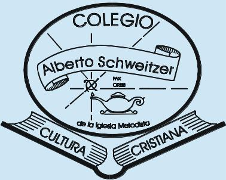

Educación:
Argentina Programa:
Desde:08/2021 Hasta:08/2022
#SéProgramar-#YoProgramo.

UTN-FRM.(Universidad Tecnológica Nacional Facultad Regional Mendoza).
Desde:2005 Hasta:2006
Licenciada En Higiene y Seguridad En EL Trabajo.
Colegio Alberto Schweitzer.
Desde:1987 Hasta: 1992
Perito Mercantil.
